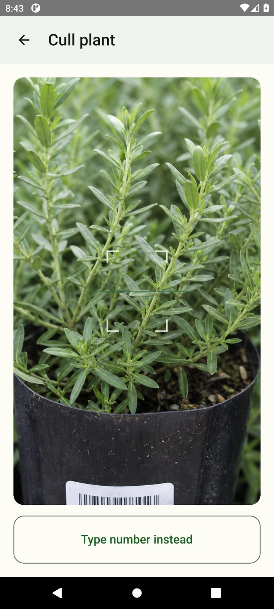
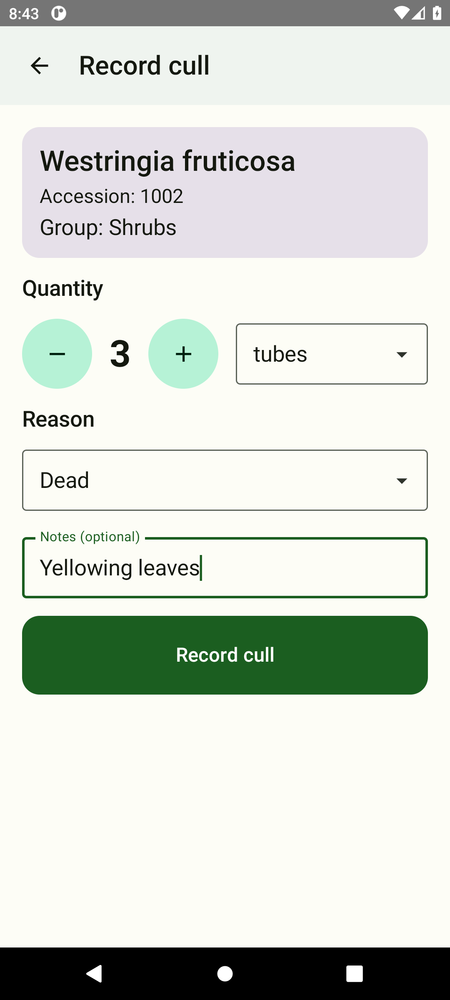
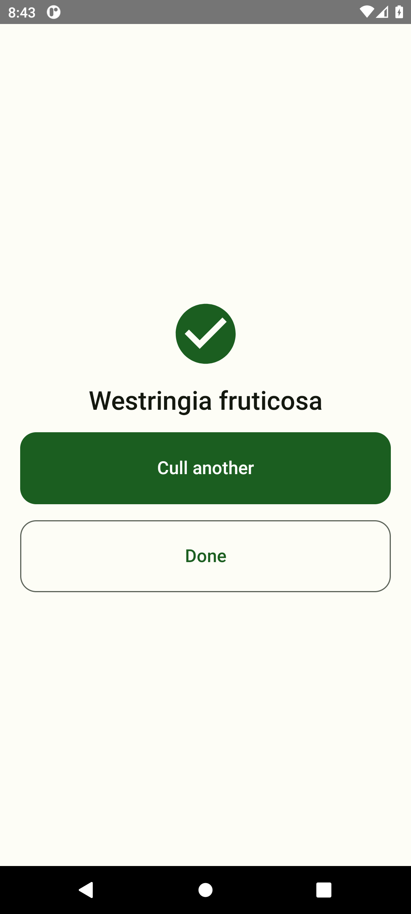
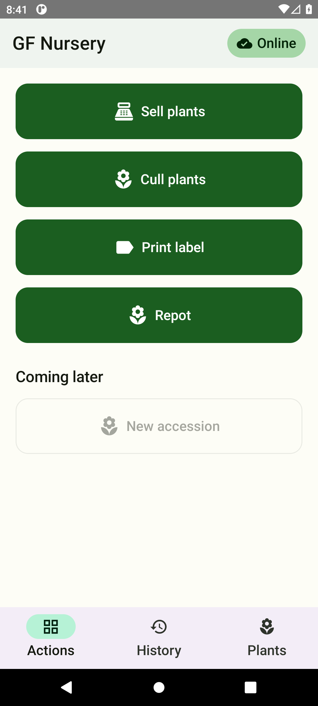

Barcode project briefing
What we do today on paper, what the phone app changes, and how we’ll get there in small, comfortable steps.
In short: every plant in our nursery moves through a handful of familiar steps — arriving, getting an accession number and labels, being repotted, being sold, or being culled. For years we’ve written those steps on paper and later typed them into Access. The barcode app is our way to make that lighter, faster, and more accurate — without rushing anyone.
1. The plant’s life in our nursery
Almost everything we do with a plant fits into six processes. Think of them as the plant’s journey from “brand new idea” to “sold, kept as stock, or finished”.
- Brand-new plant (never grown here before). Starts an approval path that includes a Royal Botanic Gardens botanist. Once approved, it moves to step 2 for an accession number.
- Propagating an existing plant (seed, cuttings, or divisions). We get an accession number for the current batch and enter plant details into Access — today still often from a paper notebook.
- Requesting and printing labels. The request goes on paper; a database operator types it into Access. Labels are printed with Access data plus a separate print program (NiceLabel).
- Repotting — tubes to pots, pots to larger pots, pots to hanging baskets, or one large pot into many tubes. Counts are not always reported fully or correctly. We currently use the same paper form for label requests and for pot-type / quantity changes, which sometimes causes mix-ups.
- Selling a plant to a customer. Sales analysis is slow because everything starts on paper. Database operators often don’t have time to enter every sale into Access.
- Culls (death and discard). Written on paper — when someone remembers. The list helps spot-check and find “lost” plants, but again there often isn’t time to enter every cull into Access.
2. Why paper makes life harder
We all know these pain points already — this just names them clearly:
- Double work — write it down, then type it again.
- A bottleneck — almost everything waits on database-manager time, especially before big sales.
- Easy mistakes — mixed-up numbers and names; some people write total pots, others only the new ones.
- More chasing — the database manager has to ask “what did you mean?”, which makes the bottleneck even tighter.
- Label delays and duplicates — we wait, forget we already ordered, and order again.
- Incomplete data — Access becomes something we can’t fully trust for day-to-day decisions or analysis.
3. What we’re building instead
An app on a phone that lets us leave paper behind — not overnight, but as our big goal. The everyday idea is deliberately simple:

1. Scan the barcode
2. Tell it what’s new
3. Tap OK — doneThe app also shows the plants currently in the nursery and the container counts stored in the database (tubes, pots, misc./hanging baskets, stock plants). That means we can gently check and correct as we go — so before a big sale, the picture is already fresher. That’s the ideal we’re aiming for; we’ll grow into it.
4. A quick tour of the app
The home screen is deliberately big and simple (designed for tired eyes and busy hands). Main actions today:

Typical flows
- Sell: Scan → enter line (qty, price, discount) → cart → confirm receipt
- Cull: Scan → enter quantity & notes → success
- Print label: Scan → choose how many copies → request queued
- Repot: Scan → update tube / pot / misc. / stock counts → save
- Also: History (receipts, culls, labels, repots) and a searchable Plants list
5. Our roadmap — three phases
Sales & culls in the app
Use the app for selling and culling, while still duplicating on paper until everyone is comfortable. This path is already tested and working. From now on: if you have something to cull, let’s do it in the app together.
Repot + label requests
Use the app for repotting (changing container types and counts) and for label-print requests. Roll out group by group. Also work out how to scale beyond a single shared Android phone.
Accessions from parent plants
When we’re happy with the earlier flows and ready to stop duplicating them on paper, use the app to obtain accession numbers for batches from existing parent / stock plants.
Brand-new plants + approval
Getting accession numbers and entering details for a plant never grown here before still goes through botanist approval and manual entry by the database manager. We’ll revisit after Phase 3 is solid.
6. How the data moves (the simple version)
Full technical architecture will live in a separate document for anyone who wants to dive deep. For all of us, this picture is enough:
If you’ve noticed a new Sync now button in Access — that’s what pushes an up-to-date plant list out toward the app. Sheets also lets us build reports; those will come in a separate email with links.
7. Two important practical notes
The nursery is many years old. Access holds roughly 25,000 barcodes, but most belong to finished batches. Loading all of them would slow everything down. Active barcodes are under 2,000. We treat a barcode as active when any container count is greater than zero (tubes, pots, misc., or stock plants).
If a scan isn’t found
That usually means Access shows zero containers for that accession. For sales and culls, that’s OK — the app still lets you record it and keeps the accession number so we can reconcile later. (Label print and repot are stricter and may ask you to contact the database administrator.)
Tip for Access operators
When you add a new accession, please set at least 1 tube. In real life, nobody requests a new accession with zero containers — and that “1” keeps the barcode active in the app’s plant list.